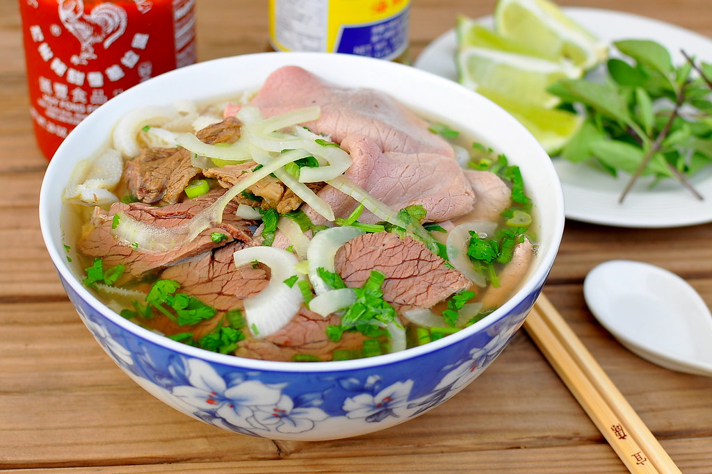

Phở Bò (Vietnamese Beef Noodles)

The Vietnamese Phở Bò
Phở Bò is a Vietnamese soup dish consisting of broth, rice noodles , herbs, and meat.
Phở is a popular food in Vietnam where it is served in households, street stalls and restaurants countrywide.
Residents of the city of Nam Định were the first to create Vietnamese traditional phở.
Phở is considered Vietnam's national dish.
Ingredients
Broth
- 5 pounds beef soup bones
- 1 tablespoon salt
- 2 gallons water
- 2 medium onions, quartered
- 1 (4 inch) piece fresh ginger root
- 2 pounds beef oxtail
- 1 white (daikon) radish, sliced
- 2 ounces whole star anise pods
- 1/2 (3 inch) cinnamon stick
- 1 teaspoon black peppercorns
- 2 whole cloves of garlic
- 1 tablespoon white sugar
- 1 tablespoon fish sauce
- salt to taste
Other
- 1 and 1/2 dried flat rice noodles
- 1/2 pound frozen beef sirloin
How to make
- Make broth: Place beef bones in a 9-quart (or larger) pot; season with 1 teaspoon salt. Pour water into the pot and bring to a boil. Reduce heat and simmer broth for about 2 hours.
- Meanwhile, set an oven rack about 6 inches from the heat source and preheat the oven's broiler. Line a 10x15-inch roasting pan with aluminum foil.
- Place onions and unpeeled ginger onto the prepared roasting pan and cook under the preheated broiler, stirring occasionally, until vegetables are charred, 10 to 15 minutes. Cool slightly. Chop onions, then peel and slice ginger; set aside separately.
- Skim fat from surface of simmering broth. Add oxtail, radish, and charred onions to broth. Tie charred ginger, anise, cinnamon stick, peppercorns, and cloves in cheesecloth to make a bouquet garni; add to broth. Stir in sugar, fish sauce, and remaining 2 teaspoons salt. Simmer over medium-low heat for at least 4 hours (the longer, the better). Season with salt.
- Strain broth. Discard bones and bouquet garni. Reserve meat from bones for another use. Chill broth in the refrigerator, 8 hours to overnight.
- Skim and discard fat from the top of chilled broth. Pour broth into a pot; bring to a boil. Reduce heat and keep hot until ready to serve.
- Bring a pot of water to a boil. Turn off heat. Stir in rice noodles and let sit until noodles are tender yet chewy, 6 to 10 minutes.
- Meanwhile, cut frozen sirloin into paper-thin slices.
- Drain and divide noodles among bowls, about 1 1/2 cups per serving. Top each with a few sirloin slices. Ladle hot broth over sirloin and noodles.
Enjoy!
return to top